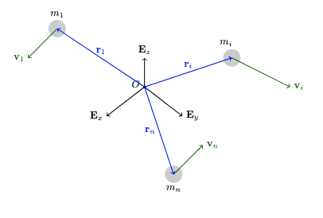
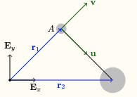

2 System of Particles

Consider a system of \(n\) particles. A typical particle hasIn this chapter, we will define analogous quantities for the system. Also, starting the balance law for each individual particle, we’ll write the balance law for the system.
2.1 Center of Mass
Question: What is the position vector of the center of mass of a system of multiple particles?
Answer:
The center of mass \(C\) of a system of particles is defined to have position vector
\[\begin{align} \mathbf{r}_C = \frac{1}{m}\sum_{k=1}^n m_k\mathbf{r}_k, \end{align}\]
where
\[\begin{align} m = \sum_{k=1}^n m_k \end{align}\]
is the total mass of the system of particles.
Question: Consider the unsymmetrical dumbbell depicted in the figure below. Particle 1 of mass \(m\) and particle 2 of mass \(3m\) are connected by a massless rigid rod.

where
\[\begin{align*} \mathbf{r}_1 &= \mathbf{E}_x+\mathbf{E}_y,\\ \mathbf{r}_2 &= 2\mathbf{E}_x. \end{align*}\]
Calculate \(\mathbf{r}_C\), the position vector of the center of mass \(C\) of \(m_1\) and \(m_2\). Is \(C\) located on the dumbbell?
Answer:
\[\begin{align*} \mathbf{r}_C = \frac{m\mathbf{r}_1+3m\mathbf{r}_2}{m+3m} = \, ... \end{align*}\]
We can check mathematically that \(C\) lies on the line connecting \(m_1\) and \(m_2\) by calculating the equation of that line and checking whether \(C\) belongs to it.
Alternatively, we can define a new basis, \(\{\mathbf{u},\mathbf{v}\}\), and calculate the position of \(C\) relative to \(m_1\) on that basis. This should be along \(\mathbf{u}\).
In the previous exercise, we used \[\begin{equation} \mathbf r_{C/A} = \frac{\sum m_i \mathbf r_{i/A}}{\sum m_i}. \end{equation}\]
Questions: Starting from \[ \mathbf r_C = \frac{1}{m}\sum_{k=1}^nm_k\mathbf r_k, \] show that \[\mathbf r_{C/A} = \frac{\sum m_i \mathbf r_{i/A}}{\sum m_i}.\]
Differentiating the expression for the position vector of the mass center, we get \[\begin{align} \mathbf{v}_C = \frac{1}{m}\sum_{k=1}^nm_k\mathbf{v}_k = \frac{1}{m}\sum_{k=1}^n\mathbf{G}_k. \end{align}\] Notice that the velocity of the center of mass is the weighted sum of the velocities of the particles.
Question: Show that the following identities are true. \[\begin{align} \begin{split} \sum_{k=1}^nm_k(\mathbf{r}_C-\mathbf{r}_k) = \mathbf{0},\\ \sum_{k=1}^nm_k(\mathbf{v}_C-\mathbf{v}_k) = \mathbf{0}. \end{split} \end{align}\]
2.2 Linear Momentum
The linear momentum \(\mathbf{G}\) of the system of particles is the sum of the linear momenta of the individual particles. \[\begin{align} \mathbf{G} = m\frac{d\mathbf{r}}{dt} = \sum_{k=1}^n m_k\frac{d\mathbf{r}_k}{dt} = \sum_{k=1}^n\mathbf{G}_k. \end{align}\] The linear momentum of the center of mass is the linear momentum of the system.
2.3 Angular Momentum
The angular momentum \(\mathbf{H}^P\) of the system of particles relative to a point \(P\), whose position vector relative to \(O\) is \(\mathbf{r}_P\), is the sum of the individual angular momenta: \[\begin{align} \begin{split} \mathbf{H}^P &= \sum_{k=1}^n\mathbf{H}^{P_K} = \sum_{k=1}^n(\mathbf{r}_k-\mathbf{r}_P)\times m_k\mathbf{v}_k\\ &= \mathbf{H}^C + (\mathbf{r}_C-\mathbf{r}_P)\times \mathbf{G}. \end{split} \end{align}\] where \[\begin{align} \begin{split} \mathbf{H}^C &= \sum_{k=1}^n(\mathbf{r}_k-\mathbf{r}_C)\times m_k\mathbf{v}_k\\ &= \sum_{k=1}^n(\mathbf{r}_k-\mathbf{r}_C)\times m_k(\mathbf{v}_k-\mathbf{v}_C). \end{split} \end{align}\]
Question: Show that \[\begin{align} \begin{split} \sum_{k=1}^n(\mathbf{r}_k-\mathbf{r}_P)\times m_k\mathbf{v}_k = \mathbf{H}^C + (\mathbf{r}_C-\mathbf{r}_P)\times \mathbf{G}. \end{split} \end{align}\]
Hint: Introduce \(\mathbf{r}-\mathbf{r}\).
Question: Show that \[\begin{align} \begin{split} \sum_{k=1}^n(\mathbf{r}_k-\mathbf{r}_C)\times m_k\mathbf{v}_k = \sum_{k=1}^n(\mathbf{r}_k-\mathbf{r}_C)\times m_k(\mathbf{v}_k-\mathbf{v}_C). \end{split} \end{align}\]
Hint: introduce \(\mathbf{v}_C-\mathbf{v}_C\).
2.4 Kinetic Energy
The kinetic energy \(T\) of the system of particles is defined to be the sum of their individual kinetic energies: \[\begin{align} T = \sum_{k=1}^nT_k = \sum_{k=1}^n\frac{1}{2}m_k\mathbf{v}_k\cdot\mathbf{v}_k. \end{align}\]
In general, the kinetic energy of the system is not equal to the kinetic energy of the center of mass.
Using the center of mass, \[\begin{align} T = \frac{1}{2}m\mathbf{v}_C\cdot\mathbf{v}_C + \frac{1}{2}\sum_{k=1}^nm_k(\mathbf{v}_k-\mathbf{v}_C)\cdot(\mathbf{v}_k-\mathbf{v}_C). \end{align}\]
Question: Show that \[\begin{align} \begin{split} \sum_{k=1}^n\frac{1}{2}m_k\mathbf{v}_k\cdot\mathbf{v}_k = \frac{1}{2}m\mathbf{v}_C\cdot\mathbf{v}_C + \frac{1}{2}\sum_{k=1}^nm_k(\mathbf{v}_k-\mathbf{v}_C)\cdot(\mathbf{v}_k-\mathbf{v}_C). \end{split} \end{align}\]
Hint: Add \(\mathbf{v}_C-\mathbf{v}_C\) to the previous for both \(\mathbf{v}_k\) terms.
2.5 Kinetics of a System of Particles: Linear Momentum
For each particle \[\begin{align} \mathbf{F}_i = m_i\mathbf{a}_i. \end{align}\] Adding these \(n\) equations together and using the definition of the center of mass \[\begin{align} \mathbf{F} = m\mathbf{a}_c \end{align}\] \[\begin{align} \mathbf{F} = \sum_{k=1}^n\mathbf{F}_k. \end{align}\] :::
Example: Monkey problems from the problem set.
The conditions for the conservation of linear momentum of a system of particles completely or along a certain direction are analogous to those of a single particle established earlier.
2.6 Kinetics of a System of Particles: Angular Momentum
Starting from \[\begin{align} \begin{split} \mathbf{H}^P &= \sum_{k=1}^n\mathbf{H}^{P_K} = \sum_{k=1}^n(\mathbf{r}_k-\mathbf{r}_P)\times m_k\mathbf{v}_k. \end{split} \end{align}\]
The derivative \(\dot{\mathbf{H}}^P\) simplifies to \[\begin{align} \dot{\mathbf{H}}^P = \sum_{k=1}^n(\mathbf{r}_k-\mathbf{r}_P)\times\mathbf{F}_k-\mathbf{v}_P\times\mathbf{G}. \end{align}\] The resultant moment of the system of forces relative to \(P\) is \[\begin{align} \mathbf{M}^P = \sum_{k=1}^n(\mathbf{r}_k-\mathbf{r}_P)\times\mathbf{F}_k. \end{align}\] The angular momentum theorem becomes \[\begin{align} \dot{\mathbf{H}}^P = \mathbf{M}^P-\mathbf{v}_P\times\mathbf{G}. \end{align}\] It is very important to notice that \(\dot{\mathbf{H}}^P\) is not necessarily equal to \(\mathbf{M}^P\).
Two important special cases of the angular momentum theorem:The conditions for the conservations of angular momentum of a system of particles completely or along a certain direction are analogous to those of a single particle established earlier.
2.7 Work-Energy Theorem
The work-energy theorem and the energy conservation for a system of particles are then \[\begin{align} \dot{T} = \sum_{k=1}^n\mathbf{F}_k\cdot\mathbf{v}_k, \end{align}\] and \[\begin{align} \dot{E} = \sum_{k=1}^n\mathbf{F}_{nc_k}\cdot\mathbf{v}_K \end{align}\] where \(\mathbf{F}_{nc_k}\) is the nonconservative force acting on the \(k\)th particle and \(E\) is the total energy of the system of particles.
Integrating with respect to time, we get \[\begin{align} \begin{split} T(t_2)-T(t_1) = \sum_{k=1}^n W_{\mathbf{F}_k,12} \end{split} \end{align}\] where the work of force \(\mathbf{F}_k\) is \[\begin{align} \begin{split} W_{\mathbf{F}_k,12} = \int_{t_1}^{t_2} \mathbf{F}_k\cdot\mathbf{v}_kdt = \int_{\mathbf{r}(t_1)}^{\mathbf{r}(t_2)}\mathbf{F}_k d\mathbf{r}_k. \end{split} \end{align}\]
The work of the force is the integral of the force dotted with the velocity of displacement of the point of application of the force.
Question: Consider the unsymmetrical dumbbell depicted in the figure below. Particle 1 of mass \(m\) and particle 2 of mass \(3m\) are connected by a massless rigid rod. The dumbbell is in motion in the smooth \(\{\mathbf{E}_x,\mathbf{E}_y\}\) plane at gravity acts along \(-\mathbf{E}_z\).
where \[\begin{align*} \mathbf{r}_1 &= \mathbf{E}_x+\mathbf{E}_y,\\ \mathbf{r}_2 &= 2\mathbf{E}_x. \end{align*}\]
Is the energy of the dumbbell conserved throughout its motion?
Answer: Drawing the free body diagram of both masses, we get …